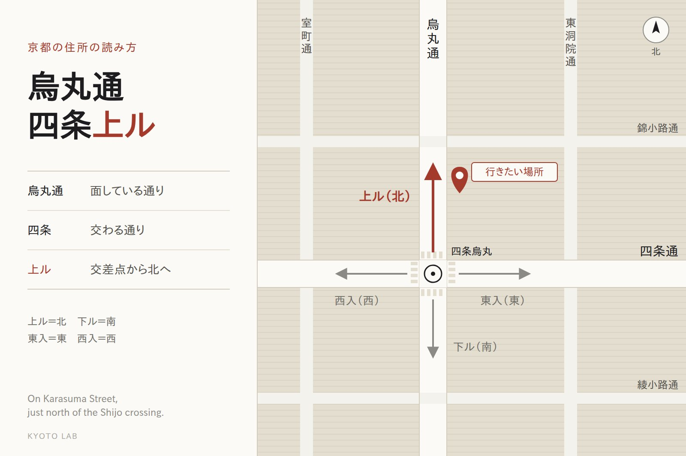

京都ラボ ／ 課題分析
京都の中心部の住所は、それ自体が道順になっています。「寺町通御池上る」なら、寺町通と御池通の交差点から北へ。地元の人とタクシーには、これ以上ない案内です。ところが地図アプリが読んでいるのは、この道順の部分ではありません。
読み方
京都市役所の住所は「京都市中京区寺町通御池上る上本能寺前町488番地」です。長く見えますが、4つに分けると道順として読めます。

決まりは1つだけで、先に書く通りに建物が面しています。同じ交差点の近くでも、「高倉通三条上ル」は高倉通に、「三条通高倉東入」は三条通に面している。北を「上る」と言うのは、北に御所があるから、あるいは北に向かって土地が高くなっているから、と説明されます。「上る」と「上ル」はどちらも使われていて、意味は同じです。
背景
通り名は飾りではありません。京都の中心部には、同じ名前の町がいくつもあります。たとえば「亀屋町」は、中京区の中だけで5か所あります。町名と番地だけでは、どの亀屋町なのかが決まらない。だから通り名を前に付けて、区別してきました。
逆に、1つの町に通り名の書き方が何通りもあることもあります。日本郵便の郵便番号の一覧では、中京区の亀屋町の1つに「御幸町通御池上る」「押小路通寺町西入」など7通りの書き方が並んでいます。町が複数の通りに面していれば、どの通りから数えても正しい住所になるからです。
京都市は、ほかの大都市のような「◯丁目◯番◯号」の住居表示を実施しておらず、住所は土地の地番で登録します。通り名を書かない住所も誤りではない、と京都市は説明しています。ただ住民登録は通り名を含めて行っているので、免許証などには通り名の入った住所が載ります。京都の人にとっては通り名のほうが本体で、町名を聞いても場所が浮かばないことは珍しくありません。
分解
地図アプリや予約サイトの住所欄は、多くが「区＋町名＋番地」で書かれています。Google マップで京都の中心部の住所が町名だけで表示され、通り名が省かれていることは、2022年に報道もされました。住所を機械で扱うためのオープンソースのライブラリでも、京都の通り名は取り除いてから処理する作りになっています。
つまり機械の側では、通り名と「上ル・下ル」は、読み飛ばす部分として扱われています。
人は住所の前半で歩き、機械は後半で探す。
1つの住所の中で、読む場所が逆になっている。
抜け落ちるもの
京都の住所を、通り名の決まりを知らない旅行者と地図アプリのあいだに置くと、次の3つが抜け落ちます。
地図アプリの画面に出るのは「上本能寺前町」のような町名です。一方で交差点の名前は、「四条烏丸」「河原町三条」のように、たいてい通り名の組み合わせでできています。歩きながら画面と街を照らし合わせる手がかりが、画面の側から消えます。
画面の住所と、街で見える名前が一致しない → 頼れるのは地図のピンだけになる
町名と番地だけで検索すると、同じ区にある同じ名前の別の町が候補に出るおそれがあります。郵便番号は、同じ名前の町どうしでも別になっているので、区別の手がかりになります。
住所を短くして入れるほど、取り違えやすくなる
ローマ字にすると「Teramachi-dori Oike-agaru」。agaru は「上がる」という動詞で、北という意味は、京都の決まりを知らなければ出てきません。英語の住所欄に書き写しても、旅行者には読めない1行が増えるだけです。
ローマ字にしても、道順としては伝わらない
店ができること
京都の住所は、通り名を知っている人への道案内としては完成しています。直すべきなのは住所ではなく、住所しか渡していないことです。店の側でできることを、手間の少ない順に並べました。
01
Google ビジネスプロフィールでは、住所とは別に、地図の上のピンの位置を動かせます。ストリートビューで入口を見ながら、ピンを入口の前に合わせます。直しても元に戻ることがあるので、ときどき見直します。
02
予約の確認メール、サイト、SNS のプロフィールに、地図アプリで開けるリンクを載せます。受け取った人は、住所を打ち込み直さずに済みます。打ち込まなければ、読み違えも起きません。
03
英語の案内には、道順を言葉で書きます。交差点の名前は信号のところの標識で確かめられるので、歩いている人の手がかりになります。タクシーには通り名の入った日本語の住所がそのまま通じるので、日本語の住所も1行残しておきます。
On Teramachi Street, just north of the Oike crossing.
確かめる
地図アプリの読み方は更新で変わるので、ここに結果を書いてもすぐ古くなります。代わりに、店の方が自分で確かめる手順を置いておきます。
どれかでずれたら、上の3つのどこから手をつければいいかが分かります。ご相談はお問い合わせからどうぞ。
事実は2026年9月時点で確かめました。地図アプリの表示や検索の結果は、アプリの更新で変わります。ピンの動かし方は、各サービスのヘルプで最新の手順を確認してください。